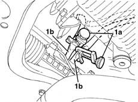
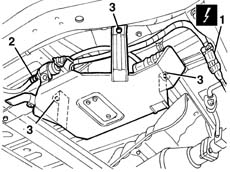
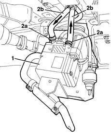
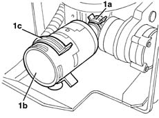

5020M24 Air intake HOSE for additional independent heater - R.R.
- Path
- Procedures > 50 AUXILIARY UNITS > 5020 HEATER > 5020M supplementary independent heater > 5020M24 Air intake HOSE for additional independent heater - R.R.
- Kind
- repair procedure (removal / refitting; the operation number is the code)
- Applies to
- all engines; all production periods
- Interactive page
- https://sloeber94.github.io/elrnDB-fMltpl/en/#/2891795
Applies to: all engines; production: da 09/03, da 04/02 a 08/03
 Removing
Removing
 Refitting
RefittingPlace the vehicle on a lift.
Raise the car.
1. Using clamps (1a), close the power unit coolant pipes (1b) in the climate control casing inlet/outlet area.

Applies to: all engines; production: da 09/03, da 04/02 a 08/03
1. Disconnect the electrical connection.
 | Name | Connector |
|---|---|---|
1 | Additional heater junction |
2. Disconnect the fuel pipe.
3. Unscrew the nuts.

Applies to: all engines; production: da 09/03, da 04/02 a 08/03
1. Gently lower the heater.
2. Loosen the bands (2a) and disconnect the pipes (2b) from the heater, allowing the liquid to flow into a suitable container.

Applies to: all engines; production: da 09/03, da 04/02 a 08/03
1. Loosen the band (1a) and extract the hose (1b) releasing it from the retainer (1c).

Applies to: all engines; production: da 09/03, da 04/02 a 08/03
Refitting
RemovingCheck that the hose is not damaged.
Place the hose in position, attaching it to the retainer, then fasten the connection using the band.
Connect the pipes to the heater.
Place the heater assembly in position and fasten it using the nuts.
Connect the fuel pipe.
Connect the electrical connection.
Remove the clamps from the power unit coolant pipes in the climate control casing inlet/outlet area.
Lower the vehicle and remove it from the lift.
Top up the power unit coolant level.
Check that the additional heater is working properly.